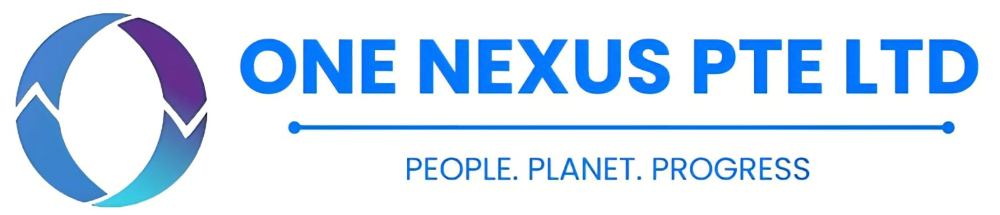

Project-first cases
Exercises are structured around real MRV, evidence, claim and industry-data questions rather than generic sustainability theory.

Enerstay Sustainability Academy
Enerstay proprietary courses are built from verification, industrial MRV, semiconductor emissions and carbon-market practice. Each module uses in-house slides, evidence worksheets, case exercises, data tables and assessment materials.
Practice System
The catalogue is designed for corporate teams, universities, industrial parks and professional associations. Course materials can be adapted by sector, language, audience seniority and assessment requirement.
Exercises are structured around real MRV, evidence, claim and industry-data questions rather than generic sustainability theory.
Participants work with boundary maps, data tables, evidence checklists and review questions similar to professional project settings.
Attendance certificates and achievement certificates can be arranged where an assessment is included and passed.
Training builds capability and evidence literacy; it is not a formal verification, validation, audit or assurance conclusion.
Online Learning

Six self-paced online courses connect management systems, auditing, compliance and quality practice. Singapore and Malaysia fees are shown per participant.
Environmental management systems, risk-based internal auditing, audit implementation, evidence and audit-report outputs.
Exam + certificate includedA focused transition for existing ISO 14001:2015 internal auditors covering key changes, audit implications and readiness for the 2026 version.
Exam + certificate includedMobile-friendly narration, synchronised learning cards, AI management-system requirements, audit-evidence routes and interactive learning checks.
Certificate includedCore compliance concepts for daily operations, risk prevention, reporting channels and individual accountability.
Exam + certificate includedA focused pathway for audit preparation, evidence collection, interview techniques, findings and report writing.
Exam + certificate includedQuality-improvement methods for process control, root-cause analysis and practical operational excellence.
Exam + certificate includedPrices are public per-participant fees. Online courses have no minimum enrolment. Course access, assessment and certificate arrangements follow the individual course pathway and are confirmed before enrolment.
Carbon & MRV Practice · Launched
Enerstay public courses are launched. Individuals and corporate cohorts are welcome to contact us for the next intake or an in-house delivery.
Ask about enrolmentFrom ESG and GHG boundaries to activity data, Scope 3 hotspots, industrial decarbonisation, SBTi-aligned roadmaps and transition finance.
ISO 14064-1 and GHG Protocol practice covering organisational boundaries, Scope 1 and 2 calculations, source records, data governance and verification readiness.
ISO 14040/14044 practice for cradle-to-gate and cradle-to-grave boundaries, life-cycle inventory data and impact-assessment methods.
ISO 14025 and EN 15804 practice covering Product Category Rules, EPD evidence compilation, verification workflow and tender or green-building applications.
ISO 14067 and PAS 2050 practice covering unit-process boundaries, multi-product allocation, calculation controls, verification evidence and customer reporting.
A practical briefing for covered exporters on embedded emissions, evidence structures, registry and reporting workflow, supplier data and commercial carbon-risk response.
Prices shown are Enerstay's public fees per participant. Public and cohort courses normally open from 5 participants; intake dates, delivery mode, assessment and certificate arrangements are confirmed before enrolment. Corporate in-house quotations are available separately.
Collaborative ESG Pathway

A structured progression from ESG foundations to applied professional practice for corporate and individual cohorts.
The entry professional level covers ESG foundations, stakeholder context, governance, responsible business and core sustainability concepts.
The specialist level develops applied ESG integration, risk, reporting, analysis and professional decision-making.
Cohort arrangements, eligibility, assessment and certificate-issuer roles are confirmed before enrolment.
Published fees are Enerstay market package prices per participant. Cohorts normally open from 5 participants. Resits, taxes, bank charges and customised corporate delivery are quoted separately; eligibility, assessment and certificate-issuer roles are confirmed before enrolment.
Singapore Carbon Pricing Practice
A practice-led series used with certification and verification professionals to strengthen regulatory literacy, MRV evidence review and surveillance readiness.
Regulatory roles, report boundaries, accountability, verification pathways and complex-sector context.
Source streams, measurement, calculations, controls, uncertainty and evidence-chain design.
Verification planning, evidence sampling, findings, surveillance scenarios and integrated exercises.
Book any module separately, or complete all three as an integrated four-day programme.
This is an Enerstay Academy technical programme referencing public CPA requirements; it is not an NEA-issued certification. Modules normally open from 5 participants.
Standards Lineage
PAS 2060:2014 was published by BSI and is now a withdrawn legacy reference. Enerstay cites BSI's public transition information for standards history only; BSI is not presented as an Academy partner.
Historical carbon-neutrality claim requirements and evidence context.
Current international framework used for reduction-first carbon-neutrality pathways and claim evidence.
A two-day applied course on reduction-first carbon-neutrality pathways, claim boundaries and evidence transition from PAS 2060 to ISO 14068-1. Normally opens from 5 participants.
BSI links are provided as public standards-history sources.
Industry & Technology Practice
A specialised module on fluorinated gases, abatement accounting, process emissions, equipment records, data quality and semiconductor MRV evidence.
For process, facilities, EHS and sustainability teams in semiconductor and advanced manufacturing.Introduces capture, utilisation and storage pathways, hard-to-abate sectors, permanence, accounting and verification considerations.
For engineering, operations, strategy and sustainability professionals.Explains offsetting, insetting, credit quality, integrity risks, value-chain action and reduction-first positioning.
For sustainability, procurement and communications teams handling carbon claims.Connects BCA Green Mark whole-life-carbon requirements with ISO-aligned LCA/PCF methods, add-and-deduct assessment logic and SGBC product selection.
For developers, contractors, consultants and product teams preparing lower-carbon building submissions.Markets & Immersion Practice
A modular China-Singapore immersion programme linking ESG and carbon learning with university, supply-chain and industry-practice contexts.
Includes a completion certificate and guided output such as a paper or poster; publication is not guaranteed.Covers compliance and voluntary carbon markets, allowances, credits, registries, retirement, carbon pricing and integrity risks. It is not financial or investment advice.
For sustainability, finance, procurement and strategy teams.Collaborative Programmes

Selected CBAM cohorts combine management, embedded-emissions data and QA/QC learning tracks. Programme arrangements are confirmed for each cohort.
CBAM scope, responsibility matrix, transition milestones, annual data calendar and management oversight.
Product routes, embedded-emissions data, source records, calculation controls and declaration packs.
Internal review, evidence-gap testing, corrective actions and simulated verification questions.
Applus+ collaboration applies only to specifically agreed cohorts.
Applied Short Courses

Selected 1-2 day formats connect carbon management, decarbonisation, sustainability reporting and operational evidence through applied exercises.
Boundaries, activity data, emission factors, reduction opportunities and management review.
ISSB/SGX-aligned disclosure logic, evidence controls and report workflow.
The institution, trainer, assessment and certificate issuer are stated in the approved cohort proposal.
International Study Programmes
Programme design combines classroom learning, industry context, university exposure and project-based sustainability exercises. Final hosts and visit sites are confirmed for each cohort.
Academic and research collaboration context for carbon-neutrality learning, methodology and selected cohort activities; each visit site and schedule is confirmed for the specific programme.
Academic and research collaboration
MY · SG · IDImmersive sustainability collaboration with pilot projects underway in Malaysia, Singapore and Indonesia, alongside government-facing cooperation and methodology development.
 Singapore
SingaporeLocal education-programme coordination, learner support and study-visit logistics for selected cohorts.
Professional Community Learning

Enerstay and BWG Academy are preparing sustainability learning for selected professional communities, with programme scope and delivery roles confirmed before launch.
WSH Professional Community
Two distinct relationships are shown: documented SISO mini-training delivery and team professional membership with recurring Bedok Safety Group knowledge exchange.
 Training collaboration record
Training collaboration recordSelected SISO mini-training sessions delivered for workplace-safety and health professional development.
Open SISO Professional membership
Professional membershipTeam professional membership and recurring participation in WSH seminars and practitioner knowledge sharing.
View WSH Council bulletinWays to Learn
Compare Enerstay-owned courses, selected collaborative cohorts and the Apex Nexus digital-learning pathway before choosing a route.
Enerstay and Apex Nexus collaborate on digital course access, learner records and selected research-training workflows.
Choose an online courseSelected management, embedded-emissions data and QA/QC programmes.
View CBAM pathwayFoundation and advanced ESG learning pathways for professional cohorts.
View IASE pathwaySelected 1-2 day sustainability and carbon-management course development.
View short-course pathwayCarbon-pricing, MRV, verification and surveillance exercises for professional teams.
View CPA pathwayProprietary industrial cases, worksheets and bilingual 1-5 day cohort delivery.
Browse proprietary modulesCredential Example
The sample shows the intended visual and control fields only. Course name, participant identity, dates, signatures and credential number are intentionally hidden.

Custom Cohorts
Enerstay can combine modules for corporate teams, universities, industrial parks and associations. Cohorts can be delivered in English, Mandarin or bilingual format, with case exercises and assessment options.